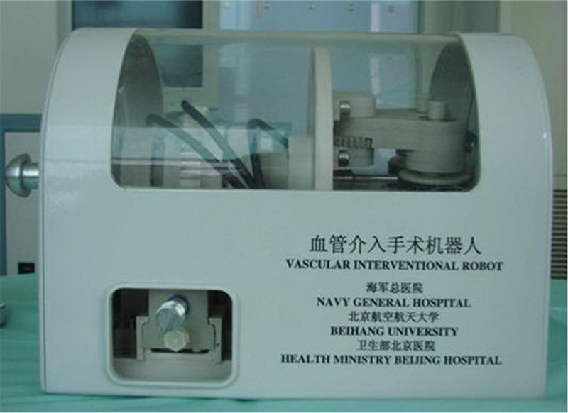

Commercial and clinical-stage systems · beihang_wang2010
Beihang VIR
Beihang remote-controlled vascular interventional robot (VISR / VIR / RVIR / VIR-2) and its successor catheter operating robot (COR, 2016), the 2023 MIVI robot

1 / 9


- Family
- Commercial and clinical-stage systems (clinical-stage)
- Devices
- catheter only, one device: 1.5 mm catheters (wang2010_remote p. 200); 4F-6F (1.33-2.00 mm) single-bend catheters through a 6F sheath, guidewire not driven ('the medical robot controlled only the catheter', lu2011_application p. 363, 365); 5F single-curve catheter in patients (lu2016_clinical p. 133); COR: 4F catheter (meng2016_novel p. 307)
- Degrees of freedom
- 2 active (axial: stepping motor 2; rotation: stepping motor 1) on a 5-DOF lockable passive hydraulic supporting arm (wang2010_remote p. 196); COR: translation, rotation and clamping motors (meng2016_novel p. 305)
- Push
- Friction rollers
- Twist
- Other
- Tested up to
- Human
- Sim-to-real
- None found — No simulation-trained controller found for this robot.
Testing
- Highest level
- Human
- What was tested
- 15 patients (March-September 2013), robot-assisted cerebral angiography, femoral sheath placed by hand, no complications (lu2016_clinical p. 133-134); 10 beagles (16-20 kg), 9 targets including both carotid and both vertebral arteries, 5 repeats, no complications (lu2011_application p. 363; meng2013_remote '10 dogs'); 1 dog, 5 targets, and glass model with 10 repeats per speed (wang2010_remote); COR: bench (10 trials per length 10-50 mm, 10 rotations) and glass model (meng2016_novel); 2023 vascular model only (guan2023_multi)
- Key numbers
- remote positioning accuracy 1.05 +/- 0.28 mm; staff DSA exposure 0 min; procedure 25-41 min, mean 34.4 +/- 5.13 min (lu2016_clinical p. 134); catheter motion error < 0.5 mm in a glass model (wang2010_remote p. 199); distortion correction RMS 0.35 px, distance reconstruction RMS 0.53 mm (max 1.34 mm) (meng2013_remote); COR axial accuracy -0.04 to 0.34 mm, relative error within +-5% (meng2016_novel Table I); 2023: 2D/3D registration < 1 mm, EM positioning RMS < 1 mm and max < 2 mm over 4 paths x 26 points (guan2023_multi Results, Fig. 7)
Mechanism
- Push (translation)
- friction-roller (catheter clamped by rollers 1 and 2 driven by stepping motor 2, wang2010_remote p. 196; COR / 2023 MIVI: bionic friction fingers, meng2016_novel p. 305, guan2023_multi Fig. 5a)
- Twist (rotation)
- the roller pair sits on a passive gear turned by stepping motor 1 through an active gear (wang2010_remote p. 196); COR: the two bionic fingers translate in opposite directions via a two-direction leadscrew and belt (finger rolling) (meng2016_novel p. 305); 2023: rotation motor (guan2023_multi Fig. 5a)
- Device range
- catheter speed 10-25 mm/s (wang2010_remote p. 199; lu2011_application p. 364); stroke N.R.; COR 205 pulses per mm (meng2016_novel p. 307)
- Target anatomy
- cerebral (angiography in patients); renal, cardiac chambers, cerebrovascular arteries in animals; aortic (2023 navigation: AAA, TAA, AD data)
Sensing and interface
- Force sensing
- PVDF piezoelectric film glued at the catheter tip, robot stalls above a threshold (wang2010_remote p. 198); lu2011 calls the force feedback virtual (p. 365); not used in the 15 patients (lu2016_clinical p. 136); COR none
- Leader and haptics
- Omega 6 haptic device (Force Dimension) (wang2010_remote p. 198); 3-DOF Novint Falcon in a shielded cabinet (meng2013_remote p. 231); master controlled over LAN, device N.R. (lu2016_clinical p. 133)
- Imaging
- X-ray/DSA (GE LCV+ C-arm); RVIR image guidance with an H40 MicronTracker and C-arm calibration phantom (meng2013_remote p. 231-236); 2023: EM tracking + CTA-DSA 2D/3D registration
- Sterility
- N.R.
Size
- Footprint (mm)
- N.R.
- Mass (kg)
- COR 2.6 kg, aluminium alloy and steel (meng2016_novel p. 309); VIR N.R.
Simulation
- Simulation model
- virtual surgery training system (lu2011_application abstract); no controller-training model
- Sim-trained controller
- none found
Versions
- Lineage
- 2010 VISR: 5-DOF lockable passive hydraulic supporting arm + catheter navigator (rollers on a gear), PVDF tip sensor, Omega 6 master, glass model and 1 dog (wang2010_remote) -> 2011 VIR + virtual surgery training system, 10 beagles (lu2011_application) -> 2013 RVIR: image guidance (C-arm calibration, MicronTracker, catheter localisation, 3D reconstruction), Falcon master (meng2013_remote) -> VIR-2, 15 patients 2013 (lu2016_clinical, online 2015) -> 2016 COR, a new driver with bionic friction fingers, leadscrew rotation and a clamping motor, 2.6 kg, bench and glass model (meng2016_novel) -> 2023 MIVI robot with EM-tracked navigation (guan2023_multi; its Fig. 5(b) is the same photograph as meng2016 Fig. 5)
Sources
- Remote‐controlled vascular interventional surgery robot · The International Journal of Medical Robotics and Computer Assisted Surgery, 2010 · doi:10.1002/rcs.306 [wang2010_remote]
- Application study of medical robots in vascular intervention · The International Journal of Medical Robotics and Computer Assisted Surgery, 2011 · doi:10.1002/rcs.406 [lu2011_application]
- A remote‐controlled vascular interventional robot: system structure and image guidance · The International Journal of Medical Robotics and Computer Assisted Surgery, 2013 · doi:10.1002/rcs.1494 [meng2013_remote]
- Clinical application of a vascular interventional robot in cerebral angiography · The International Journal of Medical Robotics and Computer Assisted Surgery, 2015 · doi:10.1002/rcs.1650 [lu2016_clinical]
- A novel catheter operating robot for vascular interventional surgery · 2016 IEEE Workshop on Advanced Robotics and its Social Impacts (ARSO), 2016 · doi:10.1109/arso.2016.7736300 [meng2016_novel]
- Multi-mode information fusion navigation system for robot-assisted vascular interventional surgery · BMC Surgery, 2023 · doi:10.1186/s12893-023-01944-5 [guan2023_multi]
Notes
- Notes
- Two hardware lines in one row: VISR/VIR/RVIR/VIR-2 (2010-2016, human) and the COR (2016) = 2023 MIVI robot (phantom). guan2023 Fig. 5(b) and meng2016 Fig. 5 are the same photograph (compared side by side by X2), so the MIVI robot is the COR; meng2016 calls the COR a new robot and cites wang2010 only as related work. | X2 2026-11-08: all five Beihang papers read in full; main picture now the VIR-2 drive (lu2016 Fig. 2).
This record
- Read level
- full — full (wang2010_remote, lu2011_application, meng2013_remote, lu2016_clinical, meng2016_novel, guan2023_multi)
- Picture
- lu2016_clinical Fig. 2 (slave component of the propulsion system of the VIR-2 robot used in the 15-patient series), Int J Med Robot 2016;12:132-136, p. 133, ↗ — licence: publisher copyright (Wiley); grade B
- Picture changes
- native extract (953 x 693); 3-px white frame cropped; nothing erased; none upscaled
- Found by
- gap: Gap searches for robots the other searches missed.
- Data
- JSON · YAML:
records/robots/beihang_wang2010.yaml - Correction
- Suggest a correction [repository not created yet]